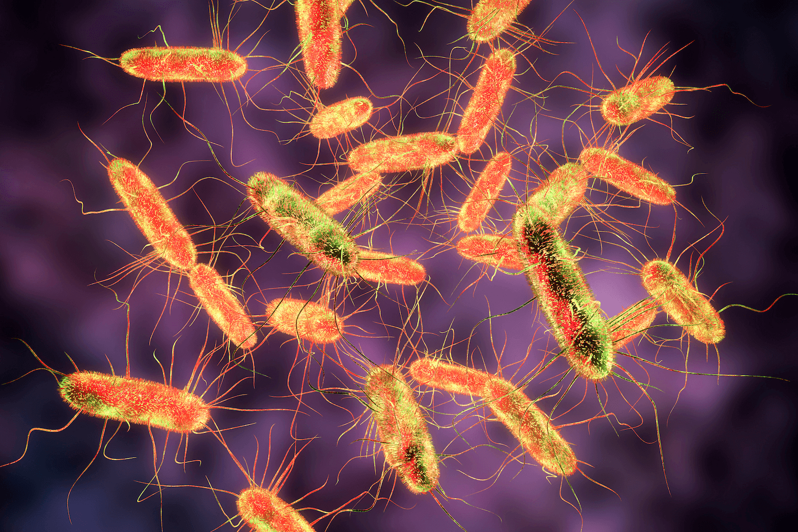

Recent Salmonella outbreak linked to onions
Reagan Smith. 8/19/2020

While salmonella is small, it poses a harmful risk because of its small bacterial size and transmission through contaminated food or water. (Live Science)
While salmonella is small, it poses a harmful risk because of its small bacterial size and transmission through contaminated food or water. (Live Science)
The latest obstacle 2020 has thrown us is a salmonella outbreak in the United States linked to a variety of onions. The source of the outbreak originates from onions coming from Thompson International, Inc. Varieties of onions affected by salmonella include red, white, yellow and sweet yellow, according to the Centers for Disease Control and Prevention (CDC). On Aug. 1, all onions sold from May 1, 2020, to the present had been recalled by the company, and the U.S. Food and Drug Administration (FDA) says that the food may be packaged under the following other brand names: Thomson Premium, TLC Thomson International, Tender Loving Care, El Competitor, Hartley’s Best, Onions 52, Majestic, Imperial Fresh, Kroger, Utah Onions and Food Lion.
What exactly is salmonella? A bacteria affecting the intestinal tract, salmonella is commonly transmitted via contaminated food or water, especially raw meat, poultry, eggs, seafood, and fruits and vegetables washed with salmonella-infected water. There are typically no symptoms, states the Mayo Clinic. Although if there are, they will develop within 8 to 72 hours and include nausea, vomiting, abdominal cramps, diarrhea, fever, chills, and headache. Oftentimes the water loss associated with the symptoms causes the most issues, as affected people can become severely dehydrated. If the bacteria enters the bloodstream in a process called bacteremia, it can infect the body tissues in the brain and spine (meningitis), heart lining or valves (endocarditis), bones and bone marrow (osteomyelitis), and blood vessel lining. The best way to prevent a salmonella infection is to avoid consuming raw eggs.
The salmonella bacteria has a rod-like shape and remarkable diversity mainly due to within-host evolution prompted by a competitive environment, according to Trends in Microbiology. Salmonella must find a specific niche to occupy inside the host to obtain sufficient nutrients. It also must evolve to fight against the host’s immune system attempting to destroy the foreign invasion. Most mutations in the salmonella’s DNA have no effect or cause harm; however, every so often, a mutation will improve the ability of the bacteria to survive and multiply and even transfer to a new host, thus solidifying the mutation as an evolutionary change in the DNA. Salmonella will evolve to thrive in a specific range of host types because certain mutations will only benefit in certain hosts, which also increases diversity. This is good news for humans though because it means only a few species of salmonella will truly cause harm to the body.
Consumers are advised to look for the source of their onions, and throw them out if they are not certain of the company. Restaurants and suppliers are responsible for the quality of the onion and onion-products they sell. As of Aug. 9, NEJM Journal Watch reports 640 people infected in 43 states, with 85 hospitalizations and 0 deaths. The state with the highest number of reported cases is Utah at 61.
While this event is not major news considering everything else going on in the world, it is a reminder to be updated and informed about food safety. Although much is out of one’s control, individuals have a hand in keeping themselves safe and being responsible for what they consume.
Cover Photo: (KRCG News)

Reagan is a junior from Sage Hill School. She is passionate about all things related to science, especially biology and medicine. She also loves being able to use her talents and knowledge to help others and make a difference in the world.